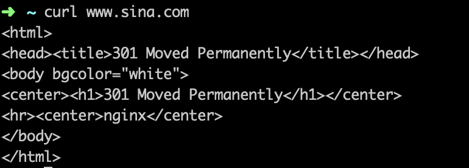
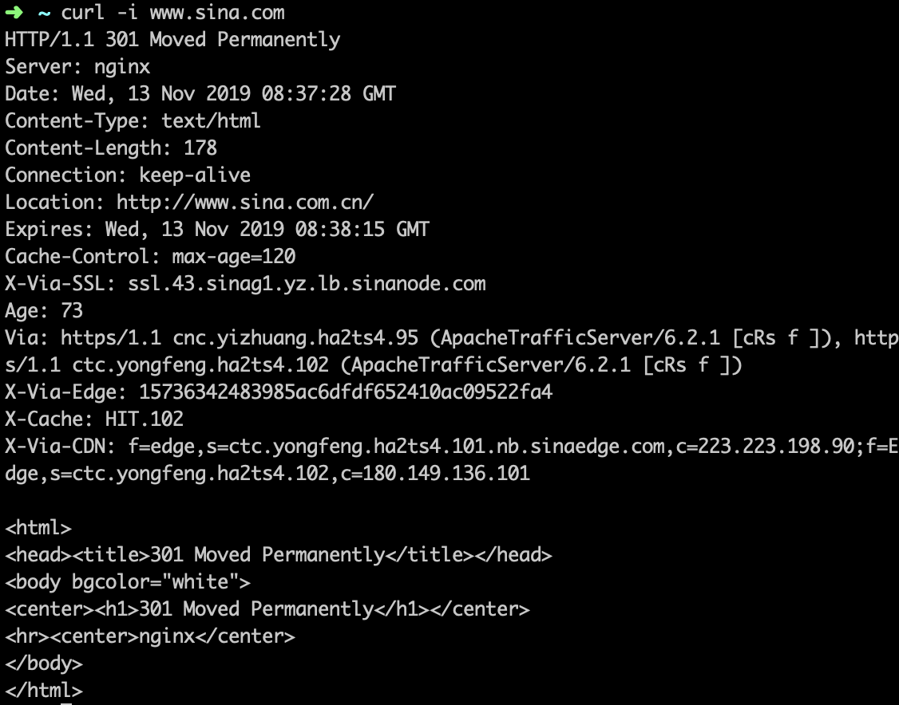
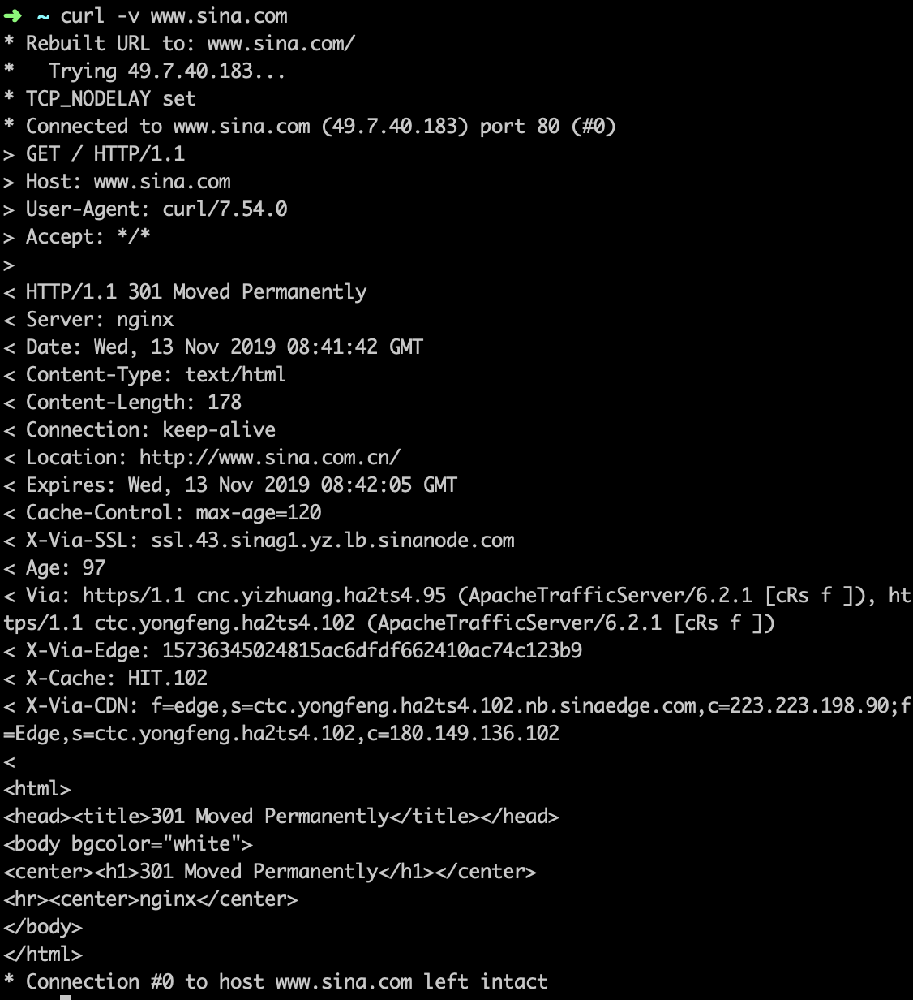

简介
cURL是一个利用URL语法在命令行下工作的文件传输工具，1997年首次发行。它支持文件上传和下载，所以是综合传输工具，但按传统，习惯称cURL为下载工具。
功能
支持多种协议，下面主要介绍几个网站开发常用的命令。
1 查看网页源码
直接在curl命令后加上网址，就可以看到网页源码。
1 | curl www.sina.com |

2 保存网页
1 | curl -o output.txt www.sina.com |
会将页面内容存储在output.txt中。
3 自动跳转
对于一些301的网站，可以使用 -L 进行跳转，找到最终页面。1
curl -L -o output.html www.sina.com
结果会自动跳转到www.sina.com.cn
验证可通过输出到 output.txt 中查看
1 | curl -o output.txt -L www.sina.com |
4 显示header信息
-i 可以显示http response的 header信息，以及结果。示例：
1 | curl -i www.sina.com |
结果如下：

5 显示通信过程
-v 可以显示http通信的整个过程，包括请求头，响应头与结果。
1 | curl -v www.sina.com |
结果如下：

如果想查看更细节通信过程，包括字节包，可以使用：
1 | curl --trace output.txt www.sina.com |
查看output.txt即可。
6 请求添加信息
增加header信息
1 | curl --header "Content-Type:application/json" http://example.com |
--header 或者 -H
增加cookie
–cookie 或者 -b 都可以，也可以发送一个文件里的内容。1
$ curl --cookie "name=xxx" -b "foo=bar" www.example.com
读取cookie写入文件
1 | curl -c cookies.txt https://www.google.com |
在cookies.txt中就可以看到cookie。
增加user-agent信息
1 | curl -A "Mozilla/5.0 (iPhone; U; CPU iPhone OS 4_0 like Mac OS X; en-us) AppleWebKit/532.9 (KHTML, like Gecko) Version/4.0.5 Mobile/8A293 Safari/6531.22.7" www.sina.com |
发送get请求
-G参数用来构造 URL 的查询字符串。
1 | curl -G -d 'q=kitties' -d 'count=20' https://google.com/search |
上面命令会发出一个 GET 请求，实际请求的 URL 为https://google.com/search?q=kitties&count=20。 如果不加-G则会发出post请求。如果数据需要URL编码，可以结合--data--urlencode参数。
发送post请求的数据体
1 | curl -d'login=emma＆password=123'-X POST https://google.com/login |
使用-d参数以后，HTTP 请求会自动加上标头 Content-Type : application/x-www-form-urlencoded
上传二进制文件
1 | curl -F 'file=@photo.png;type=image/png' www.sina.com |
上传的photo.png 文件， 上面命令会给 HTTP 请求加上标头Content-Type: multipart/form-data
限制http请求与响应的带宽，模拟慢网。
1 | curl --limit-rate 200k www.baidu.com |
上面命令将带宽限制在每秒 200K 字节。
其实有了这个，完全就可以在命令行模拟请求发送了，不需要postman了。~~~
更多参考：
curl cookbook